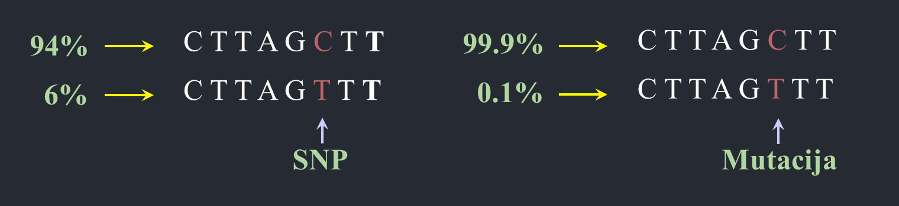

images <- c(plink2 = "quay.io/biocontainers/plink2:2.0.0a.6.9--h9948957_0",
plink = "quay.io/biocontainers/plink:1.90b7.7--h18e278d_1")
plink_docker <- function(program, ...) {
args <- c("run", "--rm", "-v", paste0(getwd(), ":/data"), "-w", "/data", images[[program]], program,
..., "--chr-set", "26", "no-x", "no-y", "no-xy", "no-mt")
windows <- .Platform$OS.type == "windows"
system2("docker", shQuote(args, type = if (windows) "cmd" else "sh"))
}
plink_docker("plink2", "--bfile", r("eagle_0"), "--freq", "--out", r("freq_docker"))Practical 2: Introduction to population genetics, SNPs and PLINK
Learning goals
After this practical you will be able to:
- explain what genetic diversity is and why SNPs (single nucleotide polymorphisms) are the main markers in population genetics,
- describe the steps of SNP analysis (pipeline) from sequencing reads to the final SNP dataset,
- read a VCF (Variant Call Format) file and prepare biallelic variants for PLINK,
- know the PLINK input files (
.ped/.map,.bed/.bim/.fam) and run PLINK from R, - perform quality control (QC) and filtering: missing data, MAF, HWE, relatedness (KING), LD,
- import PLINK results into R and visualise them,
- justify filtering thresholds and recognise the particularities of historical samples (ancient DNA).
Biological question: are the white-tailed eagle (Haliaeetus albicilla) data good enough to compare island and mainland, and historical and contemporary populations? Which individuals and SNPs do we have to remove, and why?
Introduction to population genetics, genetic diversity and SNPs
Population genetics is the study of genetic differences within and between populations. It focuses on understanding how these differences arise, how they are distributed, and their role in evolutionary processes. Key areas of research include adaptation, speciation and population structure.
Genetic diversity: the foundation of evolution
Genetic diversity refers to the variation in DNA sequences among individuals in a population. It plays a critical role in:
- Adaptation: high genetic diversity increases the likelihood that some individuals in a population can survive and reproduce under changing environmental conditions.
- Evolutionary potential: diversity provides the raw material for natural selection, enabling populations to evolve over time.
Most of the genome is identical between individuals of the same species; only a small part differs. In humans, the DNA of two individuals is about 99.6% identical, while the remaining 0.4% (approximately 12 million base pairs, including structural variants) accounts for individual differences. In other species the proportion is different. Population genetic analyses use exactly this small, variable part of the genome. The differences can be neutral, beneficial or detrimental, depending on their context in the genome.
Single nucleotide polymorphisms (SNPs)
By number, SNPs are the most common type of genetic variation: a position in the genome where individuals differ in a single nucleotide (A, C, T or G). SNP and mutation do not mean the same:
- A mutation is an event that creates a new change in the DNA. Every SNP once arose by mutation.
- A SNP (single nucleotide polymorphism) is a single nucleotide variant found in a population.
- By convention, variants with MAF ≥ 1% are called common variants, those with MAF < 1% rare variants. The 1% threshold comes from human genetics and is not a biological boundary. Older sources call rare variants simply “mutations”, as in the figure below. Rare variants are also part of genetic variation.

With our 92 eagles (184 genome copies), a MAF of 1% means fewer than two copies of the allele. The 1% threshold therefore also depends on sample size.
Key characteristics of SNPs
- Frequency: by number, SNPs are the most common variants (a human genome differs from the reference at about 4–5 million sites, mostly SNPs). Structural variants (deletions, insertions, duplications) are fewer, but together they cover more base pairs.
- Distribution: in humans they occur approximately every 300 to 1000 base pairs. The density depends on the species and the genomic region.
- Binarity: SNPs are typically biallelic, meaning there are two possible nucleotides at a given position.
Allele types at SNP loci
- Major allele: the allele with the higher frequency in the population.
- Minor allele: the allele with the lower frequency. Its frequency is the MAF (minor allele frequency).
For a biallelic SNP, the major allele has a frequency above 50% and the minor allele below 50%. At multiallelic sites this is not necessarily true, which is why we keep only biallelic SNPs from the VCF (Steps of SNP analysis).
In VCF files we meet another naming: the reference allele (REF) is the one in the reference genome, the alternative allele (ALT) is the other one. The reference allele is not necessarily the major allele.
A diploid individual has one of three genotypes at each SNP:
| Genotype | VCF code | Meaning |
|---|---|---|
| homozygous for the reference allele | 0/0 |
e.g. A/A |
| heterozygous | 0/1 |
A/G |
| homozygous for the alternative allele | 1/1 |
G/G |
| missing genotype | ./. |
not enough reads at this position |
Changes between two purines (A ↔︎ G) or two pyrimidines (C ↔︎ T) are transitions (Ts), all others are transversions (Tv). Transitions are more common in genomes, so the Ts/Tv ratio is a good indicator of variant calling quality (around 2–3 genome-wide in vertebrates).
SNPs in coding and non-coding regions
SNPs can occur in both non-coding and coding regions:
- Non-coding regions: SNPs in these regions can affect gene regulation, splicing or the stability of RNA.
- Coding regions: SNPs in these regions may be
- synonymous: no change in the amino acid sequence due to redundancy in the genetic code,
- nonsynonymous: a change in the amino acid sequence, potentially affecting the structure and function of the protein.
SNPs as tools in research
Due to their abundance and ease of genotyping, SNPs have become the primary markers in association studies, which examine how genetic variations are linked to traits such as:
- diseases: identifying genetic risk factors for conditions like diabetes or cancer,
- phenotypes: understanding the genetic basis of traits like height, skin colour or metabolic differences.
The importance of studying SNPs
SNPs are invaluable for population genetics and genomics because they:
- trace ancestry and population history: SNP patterns reveal migration, admixture and evolutionary history,
- aid conservation biology: assess genetic diversity in endangered species to guide conservation efforts,
- facilitate personalised medicine: help identify genetic variants associated with drug responses and diseases.
By exploring genetic diversity and SNPs, population genetics provides a powerful framework for understanding evolution, human health and biodiversity.
Steps of SNP analysis
The diagram shows the steps from sequencing reads to the final merged and filtered VCF file. After basic QC and the relatedness check the pipeline splits into a dataset without LD pruning and a dataset after LD pruning, because different analyses need different datasets.
Open the diagram in full size (a vector image you can zoom freely).
From now on we will work in PLINK to do some analyses and prepare the data for R.
NasvetLinux
Large analyses are usually run on Linux servers (HPC), where PLINK is called directly from the terminal. PLINK also runs on Windows and macOS, so we will run it from R. The commands are the same. If you don’t know Linux, have a look at the basic Linux commands and the Linux chapter in Practical 0.
Biallelic variants in VCF files for PLINK
When preparing VCF (Variant Call Format) files for PLINK analysis, it’s crucial to understand and focus on biallelic variants.
What are biallelic variants?
Biallelic variants are genetic variations where only two alleles are observed at a specific locus (position) in a population. In the context of SNPs, this means there are only two possible nucleotides at a given position.
Why biallelic variants for PLINK?
- Simplicity: PLINK is designed to work primarily with biallelic variants, as they are easier to analyse statistically (the PLINK 1 format cannot store others at all).
- Common in SNPs: most SNPs are naturally biallelic, making them ideal for population genetics studies.
- Computational efficiency: biallelic variants require fewer computational resources to process and analyse.
Preparing VCF files for PLINK
- Filter for biallelic sites: remove any multiallelic variants (sites with more than two alleles) from your VCF file.
- Check the REF and ALT columns: the
REFcolumn should contain one allele and theALTcolumn only one alternative allele. - Example: a valid biallelic entry looks like
chr1 100 . A G . PASS ., whereAis the reference andGthe single alternative allele.
Important considerations
- Quality control: make sure your variants pass appropriate quality filters before including them in your PLINK analysis.
- Indels: while PLINK can handle biallelic insertions and deletions (indels), some analyses are more straightforward with SNPs only.
- Documentation: always document any filtering steps you perform on your VCF file before the PLINK analysis.
By focusing on biallelic variants, you ensure compatibility with PLINK and set a solid foundation for your population genetics analyses.
PLINK
There are two commonly used versions of PLINK:
- PLINK 1.9: PLINK 1.9 manual
- PLINK 2.0: PLINK 2 manual
They are quite different, especially in functions that calculate matrices. We will mostly use PLINK 2, because it is faster and has new analyses (e.g. KING relatedness). Some analyses are only available in PLINK 1.9 (e.g. MDS with --cluster --mds-plot and ROH with --homozyg), so install both versions. You will see for yourself when to use which: the PLINK 2 documentation says to use PLINK 1.9 for every command that is not implemented yet.
| PLINK 1.9 | PLINK 2 | |
|---|---|---|
| development | stable version, no longer substantially developed | in development (alpha), faster for large datasets |
| formats | .bed/.bim/.fam, .ped/.map |
also .pgen/.pvar/.psam (multiallelic sites, genotype dosages) |
| relatedness | --genome (PI_HAT, assumes one population) |
--make-king-table (KING-robust) |
| PCA | --pca |
--pca (also approximate for very large datasets) |
| MDS | --cluster --mds-plot |
none |
| ROH | --homozyg |
none |
| HWE | --hwe |
--hwe with the keep-fewhet option |
Download both versions from the official website:
| Version | Download | Windows | macOS, Linux |
|---|---|---|---|
| PLINK 1.9 | https://www.cog-genomics.org/plink/ | plink.exe |
plink |
| PLINK 2 | https://www.cog-genomics.org/plink/2.0/ | plink2.exe |
plink2 |
Unzip the download and save the program (only the .exe or executable file) in the data folder (see Data: white-tailed eagle). On macOS and Linux make it executable with chmod +x plink plink2.
NasvetAdvanced: PLINK in Docker (optional)
Instead of downloading the program into the data folder, you can run it in a Docker container. The advantage is that everyone uses exactly the same version of the program regardless of the operating system, and we record the version in the methods and README. This is one of the foundations of reproducibility. Docker must be installed and running (see the Tools: Docker handbook).
We use ready-made images from the BioContainers project:
| Program | Image |
|---|---|
| PLINK 1.9 | quay.io/biocontainers/plink:1.90b7.7--h18e278d_1 |
| PLINK 2 | quay.io/biocontainers/plink2:2.0.0a.6.9--h9948957_0 |
The label after the colon (tag) is the program version. Don’t use the latest tag, because it changes over time.
From a terminal (WSL, macOS, Linux), in the practical2 folder:
docker run --rm -v "$PWD":/data -w /data quay.io/biocontainers/plink2:2.0.0a.6.9--h9948957_0 plink2 --version--rm: the container is deleted when it finishes,-v "$PWD":/data: links the current folder to the folder/datain the container (otherwise PLINK can’t see our files),-w /data: the working directory in the container.
In Git Bash on Windows, put MSYS_NO_PATHCONV=1 in front of the command, otherwise Git Bash converts the path /data into a Windows path.
From R we write a function similar to plink2():
File paths must be relative (results/...), because the container only sees the practical2 folder (as /data). PLINK in the container is the Linux version, also on Windows and macOS.
OpozoriloWarning: PLINK was made for humans and SNP chips
PLINK was developed for association studies in humans (GWAS; Purcell et al. 2007). The data were genotypes from SNP chips (SNP arrays): a few hundred thousand common SNPs, chosen in advance, spread across the genome, with reliable genotypes. This leads to several assumptions that do not hold for non-model species and sequencing data (WGS, RAD):
- Chromosomes. By default PLINK knows the human chromosomes 1–22, X, Y, XY and MT. For the eagle we therefore need
--chr-setand--allow-extra-chr(see The plink2() function). - Hard calls only. PLINK reads only
GT(0/0,0/1,1/1). It discards depth (DP), quality (GQ) and genotype likelihoods (PL,GL). With low coverage and ancient DNA, exactly this information is needed to tell a true heterozygote from an error. - Variable sites only. The
.bimcontains only SNPs, no invariant sites. Therefore π per base pair, Tajima’s D and the SFS from PLINK are not correct (Practical 3). - Default parameter values are tuned to human chips (e.g. for
--homozygand--indep-pairwise).
Example: ROH without a SNP chip
ROH (runs of homozygosity) are long segments without heterozygotes, inherited from a common ancestor of both parents. --homozyg in PLINK 1.9 searches for ROH with a sliding window (by default 50 SNPs, 1 heterozygote and 5 missing genotypes allowed per window, a ROH must have at least 100 SNPs and 1000 kb). These values suit chips with an even SNP density. With sequencing data, information is lost in several ways:
- Genotype errors break ROH. WGS has many more SNPs than a chip, so a 1 Mb ROH also contains more false heterozygotes (sequencing errors, ancient DNA damage). PLINK does not know which genotype is uncertain, so it cuts a long ROH into short ones or misses it. FROH is underestimated.
- Low coverage hides heterozygotes. At 2–5× coverage we often read only one allele (allelic dropout) and a heterozygote becomes a false homozygote. There are too many ROH and they are too long. Without
PL/GLthis cannot be corrected. - LD pruning removes SNPs. Our VCF is already pruned, so the gaps between SNPs are larger and short ROH (old inbreeding) are lost. In practice we use all SNPs for ROH.
- Uneven density. With sequencing, SNPs are dense in variable regions and sparse elsewhere. The same thresholds (SNPs per window, kb per SNP) therefore do not mean equally long segments everywhere. Parameters must be adapted to the data (Meyermans et al. 2020).
Alternatives
| Analysis | PLINK | Alternative | Why |
|---|---|---|---|
| filtering, VCF statistics | --geno, --mind, --maf, --hwe |
bcftools, VCFtools | work directly on the VCF and keep DP, GQ, PL |
| PCA, structure | --pca, ADMIXTURE |
PCAngsd, NGSadmix (ANGSD); SNPRelate, adegenet (R) | genotype likelihoods at low coverage |
| relatedness | --make-king-table |
NgsRelate | genotype likelihoods at low coverage |
| π, Tajima’s D, SFS | – | pixy; ANGSD (realSFS) | account for invariant sites or likelihoods |
| ROH, FROH | --homozyg (PLINK 1.9) |
bcftools roh, RZooRoH, ROHan, detectRUNS (R) | HMM with allele frequencies and genotype likelihoods; ROHan for low coverage and ancient DNA |
So why PLINK? It is very fast (millions of SNPs in a few seconds), almost all programs read its formats, and we can compare results with many published studies. In the practicals we use it for speed. Our data are WGS filtered with DP ≥ 8 and GQ ≥ 20, so the genotypes are reliable enough as hard calls. In your own project, always check whether PLINK suits your data and justify the parameters you use.
Input files for PLINK
Text format: .ped and .map
The .ped (pedigree) file contains data about SNPs for all individuals together with some metadata about the individuals.
| Column | 1 | 2 | 3 | 4 | 5 | 6 | 7 → |
|---|---|---|---|---|---|---|---|
| Data | Family ID (FID) | Individual ID (IID) | Paternal ID | Maternal ID | Sex | Phenotype | Genotypes |
| Description | group of individual | ID for sample or individual | ID of father | ID of mother | sex | phenotype of individual | SNP data (2 columns per SNP) |
| Values | custom | custom | 0 = no data | 0 = no data | 1 = M 2 = F 0 = unknown |
0 = unknown 1 = unaffected 2 = affected |
A C G T or 1 2 3 4 0 = missing |

.ped file.The .map file contains data about SNPs and their positions on chromosomes.
| Column | 1 | 2 | 3 | 4 |
|---|---|---|---|---|
| Data | Chr | SNP ID | cM | Base pair position |
| Description | chromosome where the SNP is | ID of the SNP | distance in centimorgans (genetic distance) | SNP position |

.map file.Binary formats
Because we usually work with big files containing SNPs across the whole genome, it is recommended to convert the text files to binary files. PLINK 1 uses the trio .bed/.bim/.fam, PLINK 2 uses .pgen/.pvar/.psam:
| PLINK 1 | PLINK 2 | Content | One line = |
|---|---|---|---|
.bed |
.pgen |
genotypes (binary, we don’t open it) | – |
.bim |
.pvar |
chromosome, ID, cM, position, alleles (like .map + alleles) |
one SNP |
.fam |
.psam |
FID, IID, father, mother, sex, phenotype (first 6 columns of .ped) |
one individual |
Converting .ped/.map to the PLINK 2 binary format would be:
./plink2.exe --ped hapmap1.ped --map hapmap1.map --make-pgen --out hapmap_binIn the practicals we write the PLINK 1 format (--make-bed), because almost all programs read it (ADMIXTURE, R packages).
PLINK from R
In the previous practicals we learned about R, RStudio and Quarto. R can run command-line programs with the system() function:
system("data/plink2.exe --version")If plink2.exe is stored somewhere else than the data, we have to type the full path every time, which is not very clear:
system("C:/Users/name/Documents/EPG/data/plink2.exe --bfile results/eagle_0 --freq --out results/freq")Instead, we write our own function with function(). The simplest version takes the arguments and puts the path to PLINK in front of them:
runPLINK <- function(PLINKoptions = "") system(paste("data/plink2.exe", PLINKoptions))
runPLINK("--bfile results/eagle_0 --freq --out results/freq")The function appears in the Environment pane. In the practicals we use a slightly improved version plink2() (The plink2() function), which prints the command, adds the settings for the eagle chromosomes, checks for errors and shows the most important lines of the log (.log).
Data: white-tailed eagle
We use data from Hansen et al. (2023), Molecular Ecology: whole genomes (WGS) of 92 white-tailed eagles from Iceland (IS), Greenland (GL), Norway (NO), Denmark (DK), Estonia (ES) and one sample from Turkey (TU). Some samples are contemporary (Con, after 1990) and some historical (His, museum specimens from ~1880–1950).
OpozoriloWatch out: property of the data
The eagle VCF is already filtered and LD-pruned (r² > 0.5). The authors uploaded only the final dataset to Dryad, so:
- we cannot repeat some filters (depth, genotype quality) from scratch, but we can check them,
- the dataset contains only variable sites, and some linked SNPs have already been removed. This matters for π, SFS and ROH (Practicals 3 and 5).
Variants were called with GraphTyper2 on the golden eagle (Aquila chrysaetos) reference genome.
Folders and paths
Download E2_practical2_data.zip (100 MB) from GitHub and unzip it. You get the folder practical2 with this .qmd file, the images and the folder data. Add plink.exe and plink2.exe to the data folder and open E2_plink_EN.qmd in RStudio. The structure must be:
practical2/
├── E2_plink_EN.qmd
├── images/ # figures
├── data/
│ ├── eagle.vcf.gz # genotypes (VCF, compressed)
│ ├── eagle_metadata.csv # one individual per line
│ ├── chromosoms_eagle.csv # chromosome names
│ ├── plink.exe # PLINK 1.9 (macOS/Linux: plink)
│ └── plink2.exe # PLINK 2 (macOS/Linux: plink2)
└── results/ # PLINK writes here (created automatically)We set all paths once, at the beginning.
library(tidyverse)
data_dir <- "data" # folder with the data and both PLINK versions
results_dir <- "results" # PLINK writes its files heredir.create(results_dir, showWarnings = FALSE)
exe <- if (.Platform$OS.type == "windows") ".exe" else ""
plink2_path <- normalizePath(file.path(data_dir, paste0("plink2", exe))) # PLINK 2
plink19_path <- normalizePath(file.path(data_dir, paste0("plink", exe))) # PLINK 1.9
vcf_path <- file.path(data_dir, "eagle.vcf.gz")
NasvetOn your computer
In R we always use forward slashes (/), also on Windows. Don’t upload the results folder to GitHub (add it to .gitignore).
Group colours
We will use the same country colours in all practicals: islands in blue and green, mainland in warm colours.
country_colours <- c(IS = "#0072B2", GL = "#009E73", # islands: Iceland, Greenland
NO = "#D55E00", DK = "#E69F00", ES = "#CC79A7", # mainland: Norway, Denmark, Estonia
TU = "#7F7F7F") # Turkey (1 historical sample)
period_shapes <- c(contemporary = 16, historical = 17)Metadata
The metadata table has some columns in Slovenian; we add English versions.
meta <- read_csv(file.path(data_dir, "eagle_metadata.csv"), show_col_types = FALSE) |>
mutate(period = if_else(Time == "Con", "contemporary", "historical"),
region = recode(otok_celina, otok = "island", celina = "mainland", referenca = "reference"),
group = skupina)
meta |>
count(CO, region, period) |>
pivot_wider(names_from = period, values_from = n, values_fill = 0) |>
knitr::kable(caption = "Number of individuals per country and period.")| CO | region | contemporary | historical |
|---|---|---|---|
| DK | mainland | 11 | 5 |
| ES | reference | 3 | 0 |
| GL | island | 12 | 8 |
| IS | island | 25 | 2 |
| NO | mainland | 12 | 13 |
| TU | reference | 0 | 1 |
OpombaQuestion
Which groups have very few individuals? Can we reliably estimate allele frequencies for them?
The VCF file
A VCF is a text file with two parts: the header (lines starting with ##) describes the content, followed by a table with one line per variant. The uncompressed file is 588 MB, so we don’t open it completely, we only read the beginning.
vcf_start <- readLines(gzfile(vcf_path), n = 300) # the header has about 220 lines
header <- vcf_start[startsWith(vcf_start, "##")]
length(header) # number of header lines[1] 221grep("##FORMAT", header, value = TRUE)[1] "##FORMAT=<ID=GT,Number=1,Type=String,Description=\"GenoType call. ./. is called if there is no coverage at the variant site.\">"
[2] "##FORMAT=<ID=FT,Number=1,Type=String,Description=\"Filter. PASS or FAILN where N is a number.\">"
[3] "##FORMAT=<ID=AD,Number=R,Type=Integer,Description=\"Allelic depths for the ref and alt alleles in the order listed.\">"
[4] "##FORMAT=<ID=MD,Number=1,Type=Integer,Description=\"Read depth of multiple alleles.\">"
[5] "##FORMAT=<ID=DP,Number=1,Type=Integer,Description=\"Approximate read depth.\">"
[6] "##FORMAT=<ID=RA,Number=2,Type=Integer,Description=\"Total read depth of the reference allele and all alternative alleles, including reads that support more than one allele.\">"
[7] "##FORMAT=<ID=PP,Number=1,Type=Integer,Description=\"Number of reads that support non-reference haplotype that are proper pairs.\">"
[8] "##FORMAT=<ID=GQ,Number=1,Type=Integer,Description=\"Genotype Quality.\">"
[9] "##FORMAT=<ID=PL,Number=G,Type=Integer,Description=\"PHRED-scaled genotype likelihoods.\">" After the header comes the line with column names, which starts with #CHROM. The first 9 columns describe the variant (CHROM, POS, ID, REF, ALT, QUAL, FILTER, INFO, FORMAT), followed by one column per individual. We split the line into columns (separated by a tab, \t) and count the individuals:
columns <- strsplit(vcf_start[startsWith(vcf_start, "#CHROM")], "\t")[[1]]
length(columns) - 9 # all columns minus the 9 descriptive ones = number of individuals[1] 92Directly below the #CHROM line is the first variant. We split it into columns as well and show it as a table to see what each column means. We leave out column 8 (INFO) because it is very long, and show only the first four individuals (columns 10–13).
first <- strsplit(vcf_start[length(header) + 2], "\t")[[1]] # header + #CHROM line, then the first variant
chosen <- c(1:7, 9:13) # without INFO, only the first 4 individuals
tibble(column = columns[chosen], value = first[chosen]) |>
knitr::kable(caption = "First variant in the VCF: variant description and genotypes of the first four individuals.")| column | value |
|---|---|
| #CHROM | LR606181.1 |
| POS | 33303 |
| ID | LR606181.1:33303:SG |
| REF | A |
| ALT | C |
| QUAL | 11380 |
| FILTER | PASS |
| FORMAT | GT:AD:MD:DP:GQ:PL |
| A6512 | 1/1:0,20:0:20:60:255,60,0 |
| A6517 | 0/0:15,0:0:15:45:0,45,255 |
| A6533 | 0/1:6,10:0:16:84:184,0,84 |
| A6541 | 1/1:0,12:0:12:36:255,36,0 |
The FORMAT field tells what is stored for each individual, separated by colons, e.g. 1/1:0,20:0:20:60:255,60,0:
| Field | Meaning | Example |
|---|---|---|
GT |
genotype | 1/1 |
AD |
number of reads for the REF and ALT allele (allelic depth) | 0,20 |
MD |
number of reads with other alleles (GraphTyper specific) | 0 |
DP |
total read depth | 20 |
GQ |
genotype quality, Phred scale | 60 |
PL |
Phred-scaled likelihoods of the three genotypes | 255,60,0 |
OpombaQuestion
An individual has AD = 14,0 and GT = 0/0. Is this a reliable genotype? What about AD = 2,1 and GT = 0/1? Why did the authors remove genotypes with DP < 8 and GQ < 20?
The plink2() function
The function builds the command, prints it, runs it and shows the most important lines of the log (.log). It also adds --chr-set 26 no-x no-y no-xy no-mt, because the eagle has 26 autosomes. Without it, PLINK would treat chromosomes 23–26 as human X, Y, XY and MT. The function plink19() does the same with PLINK 1.9 (PLINK 1.9 also knows --chr-set).
plink2 <- function(..., show = TRUE, path = plink2_path) {
args <- c(..., "--chr-set", "26", "no-x", "no-y", "no-xy", "no-mt", "--silent")
out <- args[which(args == "--out") + 1]
cat(sub("\\.exe$", "", basename(path)), c(...), "\n")
# quotes around paths, so that folders with spaces also work
windows <- .Platform$OS.type == "windows"
command <- if (windows) path else shQuote(path) # Windows adds quotes itself
status <- system2(command, args = shQuote(args, type = if (windows) "cmd" else "sh"))
log <- readLines(paste0(out, ".log"))
if (status != 0) {
cat(log, sep = "\n")
stop("PLINK stopped with an error (see the log above).")
}
if (show) {
cat(grep("loaded|remaining|removed|written|scanned", log, value = TRUE), sep = "\n")
}
invisible(log)
}
# the same with PLINK 1.9 (e.g. --homozyg for ROH)
plink19 <- function(..., show = TRUE) plink2(..., show = show, path = plink19_path)
# helper: path to a file in the results folder
r <- function(name) file.path(results_dir, name)system2(plink2_path, "--version", stdout = TRUE)[1] "PLINK v2.0.0-a.6.1 64-bit (14 Nov 2024)"system2(plink19_path, "--version", stdout = TRUE)[1] "PLINK v1.90b7.1 64-bit (18 Oct 2023)"Importing the VCF into PLINK
From the VCF we keep only biallelic SNPs (--snps-only just-acgt, --max-alleles 2), as described above. Each variant gets the ID chromosome:position (--set-all-var-ids @:#). Chromosome names in the VCF (LR606181.1) are not numbers, so we need --allow-extra-chr.
import_log <- plink2("--vcf", vcf_path,
"--allow-extra-chr",
"--snps-only", "just-acgt",
"--max-alleles", "2",
"--set-all-var-ids", "@:#",
"--make-bed",
"--out", r("eagle_0"))plink2 --vcf data/eagle.vcf.gz --allow-extra-chr --snps-only just-acgt --max-alleles 2 --set-all-var-ids @:# --make-bed --out results/eagle_0
--vcf: 218126 variants scanned.
results/eagle_0-temporary.psam written.
92 samples (0 females, 0 males, 92 ambiguous; 92 founders) loaded from
209821 out of 218126 variants loaded from results/eagle_0-temporary.pvar.zst.
209821 variants remaining after main filters.# store the number of all variants in the VCF for the table at the end
vcf_snp <- grep("variants scanned", import_log, value = TRUE) |>
str_extract("[0-9]+(?= variants scanned)") |>
as.integer()
vcf_snp[1] 218126In the .bim file we replace chromosome names with numbers (table chromosoms_eagle.csv), and in the .fam file we write the group of the individual (e.g. IS_Con) instead of the FID. This way PLINK knows the populations, and R can later join results with metadata by IID.
chromosomes <- read_delim(file.path(data_dir, "chromosoms_eagle.csv"), delim = ";",
show_col_types = FALSE)
bim <- read_tsv(r("eagle_0.bim"), col_names = c("chr", "id", "cm", "pos", "a1", "a2"),
col_types = "ccdicc")
bim <- bim |>
mutate(chr = chromosomes$Chromosome[match(chr, chromosomes$ENA_accession)],
id = paste0(chr, ":", pos))
stopifnot(!anyNA(bim$chr)) # all chromosomes are in the table
write_tsv(bim, r("eagle_0.bim"), col_names = FALSE)
fam <- read_table(r("eagle_0.fam"), col_names = c("fid", "iid", "father", "mother", "sex", "phenotype"),
col_types = "cciiii")
fam$fid <- meta$group[match(fam$iid, meta$vcf_id)]
stopifnot(!anyNA(fam$fid)) # all individuals have metadata
write_tsv(fam, r("eagle_0.fam"), col_names = FALSE)
head(bim, 3)# A tibble: 3 × 6
chr id cm pos a1 a2
<chr> <chr> <dbl> <int> <chr> <chr>
1 1 1:33303 0 33303 C A
2 1 1:125059 0 125059 C T
3 1 1:175633 0 175633 A G head(fam, 3)# A tibble: 3 × 6
fid iid father mother sex phenotype
<chr> <chr> <int> <int> <int> <int>
1 IS_Con A6512 0 0 0 -9
2 IS_Con A6517 0 0 0 -9
3 IS_Con A6533 0 0 0 -9bim |>
count(chr = as.integer(chr)) |>
ggplot(aes(factor(chr), n)) +
geom_col(fill = "#0072B2") +
labs(x = "Chromosome", y = "Number of SNPs") +
theme_minimal()
Quality control and filtering
With PLINK filters we remove individuals and SNPs of poor quality. For each filter we first look at the distribution, then choose a threshold and justify it. Overview of the filters:
| Filter | PLINK command | What it removes |
|---|---|---|
| missing genotypes per individual | --mind 0.05 |
individuals with > 5% missing genotypes |
| missing genotypes per SNP | --geno 0.05 |
SNPs with > 5% missing genotypes |
| minor allele frequency | --maf 0.05 |
SNPs with MAF < 5% |
| Hardy-Weinberg equilibrium | --hwe 1e-6 (within populations only, Hardy-Weinberg equilibrium (HWE)) |
SNPs that strongly deviate from HWE |
| chromosome selection | --chr 1 |
all SNPs except those on chromosome 1 |
| linkage disequilibrium | --indep-pairwise 50 5 0.2 |
one SNP from each pair with high r² |
| relatedness | --king-cutoff 0.354 or --remove |
duplicated samples or relatives |
The values in the table are common defaults. For the eagles we will adapt some of them to the data.
Missing data
We count missing genotypes per individual (.smiss) and per SNP (.vmiss). At the same time --sample-counts counts homozygotes, heterozygotes, transitions and transversions for each individual.
plink2("--bfile", r("eagle_0"), "--missing", "--sample-counts", "--out", r("eagle_0"))plink2 --bfile results/eagle_0 --missing --sample-counts --out results/eagle_0
92 samples (0 females, 0 males, 92 ambiguous; 92 founders) loaded from
209821 variants loaded from results/eagle_0.bim.
--missing: Sample missing data report written to results/eagle_0.smiss .
--missing: Variant missing data report written to results/eagle_0.vmiss .
--sample-counts: Results written to results/eagle_0.scount .samples <- read_tsv(r("eagle_0.smiss"), show_col_types = FALSE) |>
select(vcf_id = IID, f_miss = F_MISS) |>
left_join(read_tsv(r("eagle_0.scount"), show_col_types = FALSE) |>
rename(vcf_id = IID), by = "vcf_id") |>
mutate(het = HET_SNP_CT / (HOM_REF_CT + HOM_ALT_SNP_CT + HET_SNP_CT),
ts_tv = DIPLOID_TRANSITION_CT / DIPLOID_TRANSVERSION_CT) |>
left_join(meta, by = "vcf_id")Per individual
samples |>
ggplot(aes(reorder(vcf_id, f_miss), f_miss, fill = CO)) +
geom_col() +
geom_hline(yintercept = c(0.2, 0.5, 0.8), linetype = "dashed") +
facet_grid(~ period, scales = "free_x", space = "free_x") +
scale_fill_manual(values = country_colours) +
labs(x = NULL, y = "Proportion of missing genotypes", fill = "Country") +
theme_minimal() +
theme(axis.text.x = element_text(angle = 90, size = 5, vjust = 0.5))
--mind.
samples |>
group_by(period) |>
summarise(n = n(),
median = median(f_miss),
max = max(f_miss),
`> 0.5` = sum(f_miss > 0.5),
`> 0.8` = sum(f_miss > 0.8)) |>
knitr::kable(digits = 3, caption = "Missing genotypes per period.")| period | n | median | max | > 0.5 | > 0.8 |
|---|---|---|---|---|---|
| contemporary | 63 | 0.02 | 0.833 | 1 | 1 |
| historical | 29 | 0.46 | 0.945 | 12 | 6 |
Historical samples (museum specimens, toepads, ~1900) have much more missing data. Ancient DNA is degraded into short fragments, so there are fewer reads and at many sites the depth is too low for a reliable genotype.
Comparison with the paper
The authors published the proportion of missing SNPs for each individual in Table S1 of the paper (column Frac._missing_SNPs in the metadata). We plot our calculation (F_MISS from PLINK) against their value: each point is one individual. If the values agreed perfectly, all points would lie on the grey diagonal (y = x).
ggplot(samples, aes(Frac._missing_SNPs / 1000, f_miss, colour = CO, shape = period)) +
geom_abline(slope = 1, intercept = 0, colour = "grey60") +
geom_point(size = 2.5) +
scale_colour_manual(values = country_colours) +
scale_shape_manual(values = period_shapes) +
labs(x = "Frac._missing_SNPs / 1000 (Table S1)", y = "F_MISS (PLINK)", colour = "Country", shape = "Period") +
theme_minimal()
OpombaQuestion
The values in the column Frac._missing_SNPs range from 0 to 945, so we divided them by 1000. In which unit are they recorded? Do the points lie on the diagonal? What would it mean if an individual were far from it (e.g. swapped sample names)? Why is it important to always check metadata against the data?
Choosing the --mind threshold
The threshold for individuals is a compromise: a strict threshold removes bad samples, but we may lose whole groups.
tibble(threshold = c(0.05, 0.2, 0.5, 0.8, 0.9)) |>
mutate(removed = map_int(threshold, \(p) sum(samples$f_miss > p)),
`of which historical` = map_int(threshold, \(p) sum(samples$f_miss > p & samples$period == "historical")),
`IS_His left` = map_int(threshold, \(p) sum(samples$f_miss <= p & samples$group == "IS_His")),
`GL_His left` = map_int(threshold, \(p) sum(samples$f_miss <= p & samples$group == "GL_His"))) |>
knitr::kable(caption = "How many individuals are removed at different `--mind` thresholds.")| threshold | removed | of which historical | IS_His left | GL_His left |
|---|---|---|---|---|
| 0.05 | 40 | 25 | 0 | 2 |
| 0.20 | 28 | 22 | 0 | 2 |
| 0.50 | 13 | 12 | 0 | 6 |
| 0.80 | 7 | 6 | 2 | 7 |
| 0.90 | 2 | 2 | 2 | 8 |
We choose --mind 0.8: we only remove individuals with more than 80% missing genotypes and keep most historical samples, which are essential for comparing historical and contemporary populations. In every later analysis we will check whether individuals with a lot of missing data behave differently (e.g. on the PCA in Practical 4).
plink2("--bfile", r("eagle_0"), "--mind", "0.8", "--make-bed", "--out", r("eagle_1_mind"))plink2 --bfile results/eagle_0 --mind 0.8 --make-bed --out results/eagle_1_mind
92 samples (0 females, 0 males, 92 ambiguous; 92 founders) loaded from
209821 variants loaded from results/eagle_0.bim.
7 samples removed due to missing genotype data (--mind).
IDs written to results/eagle_1_mind.mindrem.id .
85 samples (0 females, 0 males, 85 ambiguous; 85 founders) remaining after mainAncient DNA: what happens to the DNA molecule
Ancient DNA (aDNA) is not defined by the age of the sample but by its condition: it is any DNA from a non-living source that shows signs of degradation. Our museum eagles, about 100 years old, therefore also count as ancient DNA. After an organism dies, DNA repair stops and the molecule starts to break down (Slika 6.5):
- Depurination: a purine base (A or G) falls off the strand, leaving a site without a base.
- Nicks: the strand breaks at the site without a base.
- Fragmentation: when two nicks on opposite strands are close together, the molecule falls apart. Short single-stranded overhangs remain at the ends, most often one or two nucleotides long. Ancient DNA is therefore very short, on average only 30 to 50 bp.
- Cytosine deamination: cytosine loses its amino group and becomes uracil (Slika 6.6). Deamination is more than 100 times faster in single-stranded than in double-stranded DNA, so damage accumulates at the ends of fragments.

In deamination, cytosine becomes uracil, which the polymerase reads as thymine. Methylated cytosine (5-methylcytosine) is deaminated directly to thymine.

Slika 6.7 shows what happens when such a molecule is amplified and sequenced. Opposite a uracil, the polymerase incorporates adenine instead of guanine, so the sequence shows C → T (or G → A on the opposite strand), although the living eagle had a cytosine at this site. Where the strand is broken, the polymerase adds an adenine to the end that was not in the original, and this can be carried into the final sequence.

How we recognise damage
Because damage is concentrated at the ends of fragments, authentic ancient DNA shows the highest proportion of C → T at the start (5’) of a read and of G → A at its end (3’). We check this pattern on aligned reads with programs such as mapDamage and DamageProfiler (we need more than about 1000 aligned reads). The shape of the curve tells us whether the DNA is really old and how the library was prepared (Slika 6.8).

Damage is not a clock: it depends more on the temperature and humidity in which the sample was kept than on its age. We therefore use it to confirm that the DNA is old (and not modern contamination), but not to date the sample.
For population genetics there are three consequences:
- false transitions (C → T, G → A), which can be mistaken for real SNPs,
- more missing data, because fragments are short and coverage is lower,
- genotype errors, especially false heterozygotes at damaged sites.
Damage can be reduced in the lab (USER enzymes remove uracil) or bioinformatically: by trimming read ends, by taking damage into account in genotype calling, or by using transversions only.
Ancient DNA: Ts/Tv and heterozygosity
If damage was not removed, we expect a higher Ts/Tv ratio in historical samples (more false C → T and G → A transitions).
samples |>
select(vcf_id, CO, period, f_miss, `Ts/Tv` = ts_tv, Heterozygosity = het) |>
pivot_longer(c(`Ts/Tv`, Heterozygosity), names_to = "measure", values_to = "value") |>
ggplot(aes(period, value)) +
geom_boxplot(outlier.shape = NA, fill = "grey92") +
geom_jitter(aes(colour = CO), width = 0.15, size = 2) +
facet_wrap(~ measure, scales = "free_y") +
scale_colour_manual(values = country_colours) +
labs(x = NULL, y = NULL, colour = "Country") +
theme_minimal()
samples |>
group_by(period) |>
summarise(`Ts/Tv` = mean(ts_tv), heterozygosity = mean(het)) |>
knitr::kable(digits = 3)| period | Ts/Tv | heterozygosity |
|---|---|---|
| contemporary | 2.989 | 0.210 |
| historical | 3.004 | 0.256 |
ggplot(samples, aes(f_miss, het, colour = CO, shape = period)) +
geom_point(size = 2.5) +
scale_colour_manual(values = country_colours) +
scale_shape_manual(values = period_shapes) +
labs(x = "Proportion of missing genotypes", y = "Heterozygosity", colour = "Country", shape = "Period") +
theme_minimal()
OpombaQuestion
Does Ts/Tv differ between periods? What does this tell us about the filtering done by the authors? Historical samples are more heterozygous. Does this mean that the population was more diverse 100 years ago, or can the cause be technical? Think: at which sites does an individual with 70% missing data have a called genotype at all?
OpozoriloWatch out: property of the data (ancient DNA)
In historical samples, every result can be a mixture of biology and technique (less data, damage, genotyping errors). In practice, damage is checked already on the reads (e.g. mapDamage) and removed before variant calling. Another option is to use transversions only, which are not affected by deamination. We will try this with PCA in Practical 4.
Per SNP
After removing bad individuals, we recalculate the proportion of missing genotypes per SNP.
plink2("--bfile", r("eagle_1_mind"), "--missing", "--out", r("eagle_1_mind"))plink2 --bfile results/eagle_1_mind --missing --out results/eagle_1_mind
85 samples (0 females, 0 males, 85 ambiguous; 85 founders) loaded from
209821 variants loaded from results/eagle_1_mind.bim.
--missing: Sample missing data report written to results/eagle_1_mind.smiss .
--missing: Variant missing data report written to results/eagle_1_mind.vmiss .snp_miss <- read_tsv(r("eagle_1_mind.vmiss"), show_col_types = FALSE)ggplot(snp_miss, aes(F_MISS)) +
geom_histogram(binwidth = 1 / 85, fill = "#0072B2", colour = "white") +
geom_vline(xintercept = c(0.05, 0.1, 0.2), linetype = "dashed") +
labs(x = "Proportion of missing genotypes per SNP", y = "Number of SNPs") +
theme_minimal()
--mind 0.8).
tibble(threshold = c(0.05, 0.1, 0.15, 0.2)) |>
mutate(`SNPs left` = map_int(threshold, \(p) sum(snp_miss$F_MISS <= p))) |>
knitr::kable(caption = "How many SNPs are left at different `--geno` thresholds.")| threshold | SNPs left |
|---|---|
| 0.05 | 3161 |
| 0.10 | 35781 |
| 0.15 | 112908 |
| 0.20 | 208578 |
OpombaQuestion
Why does no SNP have more than 25% missing genotypes? (Hint: the VCF file name contains miss0.75.) What would happen with the default threshold --geno 0.05?
plink2("--bfile", r("eagle_1_mind"), "--geno", "0.2", "--make-bed", "--out", r("eagle_2_geno"))plink2 --bfile results/eagle_1_mind --geno 0.2 --make-bed --out results/eagle_2_geno
85 samples (0 females, 0 males, 85 ambiguous; 85 founders) loaded from
209821 variants loaded from results/eagle_1_mind.bim.
--geno: 1243 variants removed due to missing genotype data.
208578 variants remaining after main filters.Relatedness and duplicated samples (KING)
Related individuals in a sample cause problems: they inflate allele frequencies of the family, and in structure analyses (PCA, ADMIXTURE) they can create false clusters. Duplicated samples (the same individual twice) are an error that we must remove.
KING-robust kinship estimator
Source: https://www.cog-genomics.org/plink/2.0/distance
The relationship matrix computed by --make-rel, --make-grm-list or --make-grm-bin can be used to reliably identify close relations within a single population, if your MAFs are decent. However, Manichaikul et al.’s KING-robust estimator (2010) can also be mostly trusted on mixed-population datasets, and doesn’t require MAFs at all. Therefore, PLINK 2 computes relatedness with KING.
The exception is that KING-robust underestimates kinship when the parents are from very different populations. PCA can help detect this.
Note that KING kinship coefficients are scaled such that duplicate samples have kinship 0.5, not 1. First-degree relations (parent-child, full siblings) correspond to ~0.25, second-degree relations to ~0.125, etc. It is conventional to use a cutoff of ~0.354 (the geometric mean of 0.5 and 0.25) to screen for monozygotic twins and duplicate samples, ~0.177 to add first-degree relations, etc.
plink2("--bfile", r("eagle_2_geno"), "--make-king-table", "--out", r("eagle_2_geno"))plink2 --bfile results/eagle_2_geno --make-king-table --out results/eagle_2_geno
85 samples (0 females, 0 males, 85 ambiguous; 85 founders) loaded from
208578 variants loaded from results/eagle_2_geno.bim.
5 variants handled by initial scan (208573 remaining).
Results written to results/eagle_2_geno.kin0 .king <- read_tsv(r("eagle_2_geno.kin0"), show_col_types = FALSE) |>
rename(FID1 = `#FID1`) |>
mutate(same_group = FID1 == FID2)
head(king)# A tibble: 6 × 9
FID1 IID1 FID2 IID2 NSNP HETHET IBS0 KINSHIP same_group
<chr> <chr> <chr> <chr> <dbl> <dbl> <dbl> <dbl> <lgl>
1 IS_Con A6517 IS_Con A6512 203839 0.0424 0.0382 -0.248 TRUE
2 IS_Con A6533 IS_Con A6512 202001 0.0441 0.0336 -0.240 TRUE
3 IS_Con A6533 IS_Con A6517 202329 0.0598 0.0271 -0.0144 TRUE
4 IS_Con A6541 IS_Con A6512 197111 0.0426 0.0279 -0.146 TRUE
5 IS_Con A6541 IS_Con A6517 197400 0.0521 0.0235 0.0180 TRUE
6 IS_Con A6541 IS_Con A6533 195683 0.0588 0.0289 -0.0324 TRUE Each row of the .kin0 table is one pair of individuals:
| Column | Description |
|---|---|
FID1, IID1 |
family ID (here: group) and individual ID of the first individual in the pair |
FID2, IID2 |
family ID and individual ID of the second individual in the pair |
NSNP |
number of SNPs used to calculate the relatedness for this pair; higher values mean more reliable estimates |
HETHET |
proportion of SNPs where both individuals are heterozygous |
IBS0 |
proportion of SNPs where the two individuals share zero alleles identical by state (e.g. 0/0 and 1/1); higher values suggest unrelatedness |
KINSHIP |
kinship coefficient (see the table below) |
| KING kinship | Relationship | IBS0 |
|---|---|---|
| > 0.354 | duplicate or monozygotic twin (theoretically 0.5) | ≈ 0 |
| 0.177–0.354 | 1st degree: parent-offspring, full siblings (0.25) | parent-offspring ≈ 0 |
| 0.0884–0.177 | 2nd degree: half-siblings, grandparents, avuncular (0.125) | |
| 0.0442–0.0884 | 3rd degree: first cousins (0.0625) | |
| < 0.0442 | unrelated or very distantly related |
Negative values may occur due to population structure or noise; these are generally treated as zero.
Kinship and IBS0 heatmaps
We turn the table of pairs into a square matrix and plot it as a heatmap. Individuals are ordered by group.
ind_order <- meta |> filter(vcf_id %in% c(king$IID1, king$IID2)) |> arrange(group, vcf_id) |> pull(vcf_id)
king_long <- bind_rows(king |> select(id1 = IID1, id2 = IID2, KINSHIP, IBS0),
king |> select(id1 = IID2, id2 = IID1, KINSHIP, IBS0)) |>
mutate(id1 = factor(id1, levels = ind_order), id2 = factor(id2, levels = ind_order))ggplot(king_long, aes(id1, id2, fill = pmax(KINSHIP, 0))) +
geom_tile() +
scale_fill_gradient(low = "white", high = "#B2182B", name = "Kinship") +
labs(x = NULL, y = NULL) +
theme_minimal() +
theme(axis.text.x = element_text(angle = 90, size = 4, vjust = 0.5),
axis.text.y = element_text(size = 4))
ggplot(king_long, aes(id1, id2, fill = IBS0)) +
geom_tile() +
scale_fill_gradient(low = "#2166AC", high = "white", name = "IBS0") +
labs(x = NULL, y = NULL) +
theme_minimal() +
theme(axis.text.x = element_text(angle = 90, size = 4, vjust = 0.5),
axis.text.y = element_text(size = 4))
KINSHIP quantifies the degree of relatedness: high values (dark red) indicate close relatives, and clusters of high values indicate families or genetic subpopulations. IBS0 is the proportion of SNPs with no shared allele: low values indicate relatedness, high values unrelated individuals.
| Metric | High value | Low value | Best use case |
|---|---|---|---|
KINSHIP |
very closely related individuals (twins, siblings) | unrelated individuals | visualising clusters of relatives (families, subpopulations) |
IBS0 |
distantly related or unrelated individuals | closely related individuals | distinguishing close from distant relationships in a larger population |
We plot both measures together in a scatter plot: each point is one pair.
ggplot(king, aes(IBS0, KINSHIP, colour = same_group)) +
geom_hline(yintercept = c(0.354, 0.177, 0.088, 0.044), linetype = "dashed", colour = "grey50") +
geom_point(alpha = 0.7) +
scale_colour_manual(values = c(`TRUE` = "#D55E00", `FALSE` = "#0072B2"),
labels = c(`TRUE` = "same group", `FALSE` = "different groups")) +
labs(x = "IBS0", y = "KING kinship", colour = NULL) +
theme_minimal()
related <- king |>
filter(KINSHIP > 0.088) |>
arrange(desc(KINSHIP)) |>
mutate(relationship = case_when(KINSHIP > 0.354 ~ "duplicate?",
KINSHIP > 0.177 ~ "1st degree",
TRUE ~ "2nd degree")) |>
select(group = FID1, ind1 = IID1, ind2 = IID2, NSNP, IBS0, KINSHIP, relationship)
related |>
filter(relationship != "2nd degree") |>
knitr::kable(digits = 3, caption = "Pairs related at 1st degree or closer.")| group | ind1 | ind2 | NSNP | IBS0 | KINSHIP | relationship |
|---|---|---|---|---|---|---|
| NO_His | K6 | K5 | 58295 | 0.000 | 0.494 | duplicate? |
| NO_His | K2 | K1 | 31742 | 0.000 | 0.493 | duplicate? |
| DK_Con | DK13 | DK12 | 200409 | 0.007 | 0.279 | 1st degree |
| DK_Con | DK17 | DK16 | 195602 | 0.013 | 0.258 | 1st degree |
| NO_Con | BB40 | BB34 | 123321 | 0.002 | 0.226 | 1st degree |
related |>
count(group, relationship) |>
knitr::kable(caption = "Number of related pairs per group.")| group | relationship | n |
|---|---|---|
| DK_Con | 1st degree | 2 |
| DK_His | 2nd degree | 1 |
| IS_Con | 2nd degree | 16 |
| IS_His | 2nd degree | 1 |
| NO_Con | 1st degree | 1 |
| NO_His | duplicate? | 2 |
OpombaQuestion
Look at the metadata of the most related pairs (place, year, sex, sample type). Is it the same individual, siblings or an error? Why is the estimate less reliable for some pairs? (Hint: column NSNP.) Why are the values for pairs from different groups strongly negative? (KING assumes that the individuals belong to the same population.) Why are most 2nd-degree pairs in the Icelandic population? Are they really relatives, or a consequence of a small, isolated population?
close_pairs <- related |> filter(relationship != "2nd degree")
meta |>
filter(vcf_id %in% c(close_pairs$ind1, close_pairs$ind2)) |>
select(vcf_id, group, Loc, Year, Sex, Maturity, sample_type) |>
arrange(group, Loc) |>
knitr::kable()| vcf_id | group | Loc | Year | Sex | Maturity | sample_type |
|---|---|---|---|---|---|---|
| DK12 | DK_Con | Filsø, Jutland | 2015 | m | nestling | Full blood |
| DK13 | DK_Con | Filsø, Jutland | 2015 | m | nestling | Full blood |
| DK16 | DK_Con | Hyllekrog, Lolland | 2015 | m | nestling | Full blood |
| DK17 | DK_Con | Hyllekrog, Lolland | 2015 | f | nestling | Full blood |
| BB34 | NO_Con | Håmanntjønna | 2009 | m | post nestling | Toepad |
| BB40 | NO_Con | Olsvik | 2012 | f | post nestling | Toepad |
| K5 | NO_His | Hitra | 1904 | m | immature=< | Toepad |
| K6 | NO_His | Hitra | 1904 | m | immature=< | Toepad |
| K1 | NO_His | Rødøy | 1925 | f | immature=< | Toepad |
| K2 | NO_His | Rødøy | 1925 | f | immature=< | Toepad |
The pair K7–K8 (same place and year) is missing from the table, because K8 was already removed by --mind 0.8. From each duplicated pair we remove the sample with more missing data. First-degree relatives (nestlings from the same nest) are kept for now and written to a file, so that we can remove them in Practicals 3–5 if needed.
miss_2 <- samples |> select(vcf_id, f_miss)
to_remove <- related |>
filter(relationship == "duplicate?") |>
left_join(miss_2 |> select(ind1 = vcf_id, miss1 = f_miss), by = "ind1") |>
left_join(miss_2 |> select(ind2 = vcf_id, miss2 = f_miss), by = "ind2") |>
transmute(iid = if_else(miss1 > miss2, ind1, ind2)) |>
mutate(fid = meta$group[match(iid, meta$vcf_id)], .before = iid)
to_remove# A tibble: 2 × 2
fid iid
<chr> <chr>
1 NO_His K6
2 NO_His K2 write_tsv(to_remove, r("duplicates_remove.txt"), col_names = FALSE)
write_tsv(related |> filter(relationship == "1st degree"), r("relatives_1st_degree.tsv"))
plink2("--bfile", r("eagle_2_geno"), "--remove", r("duplicates_remove.txt"),
"--make-bed", "--out", r("eagle_3_no_duplicates"))plink2 --bfile results/eagle_2_geno --remove results/duplicates_remove.txt --make-bed --out results/eagle_3_no_duplicates
85 samples (0 females, 0 males, 85 ambiguous; 85 founders) loaded from
208578 variants loaded from results/eagle_2_geno.bim.
--remove: 83 samples remaining.
83 samples (0 females, 0 males, 83 ambiguous; 83 founders) remaining after mainAllele frequencies (MAF)
MAF (minor allele frequency) is the frequency of the less common allele at a SNP. Rare alleles (MAF < 1–5%) are often sequencing errors, but they also carry information about recent mutations and demography. We therefore apply the MAF filter depending on the analysis:
- PCA, DAPC, ADMIXTURE: rare alleles are usually removed (
--maf 0.05), because they contribute little to structure but add noise, - π, SFS, ROH: no MAF filter, because it would distort the frequency distribution and underestimate diversity.
plink2("--bfile", r("eagle_3_no_duplicates"), "--freq", "--out", r("eagle_3_no_duplicates"))plink2 --bfile results/eagle_3_no_duplicates --freq --out results/eagle_3_no_duplicates
83 samples (0 females, 0 males, 83 ambiguous; 83 founders) loaded from
208578 variants loaded from results/eagle_3_no_duplicates.bim.
--freq: Allele frequencies (founders only) written tofreq <- read_tsv(r("eagle_3_no_duplicates.afreq"), show_col_types = FALSE) |>
rename(CHROM = `#CHROM`) |>
mutate(maf = pmin(ALT_FREQS, 1 - ALT_FREQS))
head(freq)# A tibble: 6 × 8
CHROM ID REF ALT `PROVISIONAL_REF?` ALT_FREQS OBS_CT maf
<dbl> <time> <chr> <chr> <chr> <dbl> <dbl> <dbl>
1 1 NA A C Y 0.407 140 0.407
2 1 NA T C Y 0.355 152 0.355
3 1 NA G A Y 0.0870 138 0.0870
4 1 NA G A Y 0.0903 144 0.0903
5 1 NA G A Y 0.109 138 0.109
6 1 NA A G Y 0.0411 146 0.0411Mean alternative allele frequency and mean MAF per chromosome:
freq |>
group_by(CHROM) |>
summarise(SNPs = n(),
`mean ALT_FREQS` = mean(ALT_FREQS, na.rm = TRUE),
`mean MAF` = mean(maf, na.rm = TRUE)) |>
knitr::kable(digits = 3)| CHROM | SNPs | mean ALT_FREQS | mean MAF |
|---|---|---|---|
| 1 | 14058 | 0.215 | 0.172 |
| 2 | 15335 | 0.217 | 0.174 |
| 3 | 15601 | 0.224 | 0.178 |
| 4 | 14413 | 0.222 | 0.175 |
| 5 | 15555 | 0.221 | 0.175 |
| 6 | 9777 | 0.227 | 0.180 |
| 7 | 7928 | 0.221 | 0.175 |
| 8 | 8279 | 0.235 | 0.184 |
| 9 | 7796 | 0.223 | 0.176 |
| 10 | 8130 | 0.233 | 0.181 |
| 11 | 7833 | 0.212 | 0.167 |
| 12 | 7267 | 0.207 | 0.165 |
| 13 | 7481 | 0.227 | 0.176 |
| 14 | 5946 | 0.213 | 0.169 |
| 15 | 5669 | 0.222 | 0.174 |
| 16 | 5875 | 0.212 | 0.167 |
| 17 | 6905 | 0.222 | 0.176 |
| 18 | 5984 | 0.224 | 0.174 |
| 19 | 5061 | 0.226 | 0.179 |
| 20 | 5475 | 0.223 | 0.175 |
| 21 | 5059 | 0.234 | 0.184 |
| 22 | 5649 | 0.219 | 0.173 |
| 23 | 4544 | 0.228 | 0.181 |
| 24 | 5109 | 0.216 | 0.168 |
| 25 | 4496 | 0.210 | 0.167 |
| 26 | 3353 | 0.224 | 0.177 |
ggplot(freq, aes(maf)) +
geom_histogram(binwidth = 0.01, boundary = 0, fill = "#009E73", colour = "white") +
geom_vline(xintercept = c(0.01, 0.05), linetype = "dashed") +
labs(x = "MAF", y = "Number of SNPs") +
theme_minimal()
tibble(threshold = c(0.01, 0.05, 0.1)) |>
mutate(`SNPs removed` = map_int(threshold, \(p) sum(freq$maf < p))) |>
knitr::kable()| threshold | SNPs removed |
|---|---|
| 0.01 | 13 |
| 0.05 | 24386 |
| 0.10 | 86920 |
OpombaQuestion
Why is almost every SNP in the dataset variable (MAF > 0)? What MAF distribution would you expect for an unfiltered whole-genome dataset?
OpombaQuestion: MAF 0.01 or 0.05?
Would we get the same results with MAF ≥ 0.01 instead of MAF ≥ 0.05? Which SNPs does the higher threshold remove? Could they include alleles specific to one small group (e.g. the 2 historical Icelandic eagles or the only sample from Turkey)? MAF filtering is not neutral: how would it affect PCA, FST and the SFS?
Hardy-Weinberg equilibrium (HWE)
In an ideal population (random mating, no selection, migration or mutation, large population), genotype frequencies are \(p^2\), \(2pq\) and \(q^2\). Deviations from HWE can be technical (genotyping errors, paralogs that create too many heterozygotes) or biological (inbreeding, selection, population structure).
plink2("--bfile", r("eagle_3_no_duplicates"), "--hardy", "--out", r("hwe_all"))plink2 --bfile results/eagle_3_no_duplicates --hardy --out results/hwe_all
83 samples (0 females, 0 males, 83 ambiguous; 83 founders) loaded from
208578 variants loaded from results/eagle_3_no_duplicates.bim.
--hardy: Autosomal Hardy-Weinberg report (founders only) written tohardy_stat <- read_tsv(r("hwe_all.hardy"), show_col_types = FALSE)
head(hardy_stat)# A tibble: 6 × 10
`#CHROM` ID A1 AX HOM_A1_CT HET_A1_CT TWO_AX_CT `O(HET_A1)`
<dbl> <time> <chr> <chr> <dbl> <dbl> <dbl> <dbl>
1 1 NA A C 26 31 13 0.443
2 1 NA T C 42 14 20 0.184
3 1 NA G A 60 6 3 0.0870
4 1 NA G A 60 11 1 0.153
5 1 NA G A 56 11 2 0.159
6 1 NA A G 67 6 0 0.0822
# ℹ 2 more variables: `E(HET_A1)` <dbl>, P <dbl>| Column | Description |
|---|---|
CHROM |
chromosome where the SNP is located |
ID |
variant identifier (here chromosome:position) |
A1 |
allele 1, for which genotypes are counted |
AX |
the other allele |
HOM_A1_CT |
count of individuals homozygous for allele 1 |
HET_A1_CT |
count of heterozygous individuals |
TWO_AX_CT |
count of individuals homozygous for the other allele |
O(HET_A1) |
observed heterozygosity (Ho): proportion of heterozygotes |
E(HET_A1) |
expected heterozygosity (He) under HWE, based on allele frequencies |
P |
p-value of the HWE test (how well the SNP fits HWE expectations) |
We calculate the mean observed and expected heterozygosity per chromosome and plot them side by side:
mean_hardy <- hardy_stat |>
group_by(CHROM = `#CHROM`) |>
summarise(Ho = mean(`O(HET_A1)`, na.rm = TRUE),
He = mean(`E(HET_A1)`, na.rm = TRUE),
mean_P = mean(P, na.rm = TRUE))
mean_hardy |>
pivot_longer(c(He, Ho), names_to = "type", values_to = "value") |>
ggplot(aes(factor(CHROM), value, fill = type)) +
geom_col(position = "dodge") +
scale_fill_manual(values = c(He = "#E69F00", Ho = "#0072B2")) +
labs(x = "Chromosome", y = "Heterozygosity", fill = NULL) +
theme_minimal()
If the observed heterozygosity is lower than expected (Ho < He), there are fewer heterozygotes than expected under random mating. The cause can be inbreeding or population structure. If Ho > He, there is an excess of heterozygotes (e.g. mixing of populations or technical errors such as paralogs).
Wahlund effect
If we pool several populations with different allele frequencies, we observe a deficit of heterozygotes, even if each population is in equilibrium. This is called the Wahlund effect. We test it by calculating HWE separately for two contemporary populations. The HWE test only makes sense for SNPs that are polymorphic in the group, so we exclude monomorphic ones.
for (grp in c("IS_Con", "NO_Con")) {
writeLines(grp, r(paste0(grp, ".txt")))
plink2("--bfile", r("eagle_3_no_duplicates"), "--keep-fam", r(paste0(grp, ".txt")),
"--hardy", "--out", r(paste0("hwe_", grp)), show = FALSE)
}plink2 --bfile results/eagle_3_no_duplicates --keep-fam results/IS_Con.txt --hardy --out results/hwe_IS_Con
plink2 --bfile results/eagle_3_no_duplicates --keep-fam results/NO_Con.txt --hardy --out results/hwe_NO_Con hwe <- map_dfr(c(all = "all", IS_Con = "IS_Con", NO_Con = "NO_Con"),
\(s) read_tsv(r(paste0("hwe_", s, ".hardy")), show_col_types = FALSE),
.id = "group") |>
filter(`E(HET_A1)` > 0) |> # only SNPs polymorphic in the group
mutate(f = 1 - `O(HET_A1)` / `E(HET_A1)`) # heterozygote deficithwe |>
filter(`E(HET_A1)` >= 0.1) |>
ggplot(aes(f, colour = group, fill = group)) +
geom_density(alpha = 0.25, adjust = 2) +
geom_vline(xintercept = 0, linetype = "dashed") +
scale_colour_manual(values = c(IS_Con = "#0072B2", NO_Con = "#D55E00", all = "#000000")) +
scale_fill_manual(values = c(IS_Con = "#0072B2", NO_Con = "#D55E00", all = "#7F7F7F")) +
coord_cartesian(xlim = c(-1, 1)) +
labs(x = "F = 1 − Ho/He", y = "Density", colour = "Group", fill = "Group") +
theme_minimal()
hwe |>
group_by(group) |>
summarise(`polymorphic SNPs` = n(),
`p < 1e-6` = sum(P < 1e-6),
`p < 0.001` = sum(P < 0.001),
`mean F` = mean(f, na.rm = TRUE)) |>
knitr::kable(digits = 3, caption = "Deviations from HWE. F > 0 means a heterozygote deficit.")| group | polymorphic SNPs | p < 1e-6 | p < 0.001 | mean F |
|---|---|---|---|---|
| IS_Con | 89995 | 372 | 956 | -0.031 |
| NO_Con | 189567 | 0 | 4 | -0.053 |
| all | 208578 | 2495 | 13235 | 0.140 |
OpombaQuestion
Why are there many more deviations from HWE when we pool all eagles? What would happen if we applied --hwe 1e-6 to all individuals together? Which SNPs would we remove? (Hint: exactly those that differ most between populations.)
Therefore we do not apply the HWE filter to pooled data. In practice it is applied within populations, removing only SNPs that deviate in several populations at once (which indicates a technical error, e.g. a paralog).
PLINK 2 has the option keep-fewhet for this (--hwe 1e-6 keep-fewhet): it removes only SNPs with too many heterozygotes (typical of paralogs) and keeps SNPs with a deficit of heterozygotes (typical of population structure and the Wahlund effect). The HWE filter is therefore not an automatic part of QC: we first calculate HWE and interpret the result, and apply the filter only if we can justify it.
Filtering by chromosome
With --chr we keep only selected chromosomes. This is useful when we want to test an analysis on a smaller dataset first.
plink2("--bfile", r("eagle_3_no_duplicates"), "--chr", "1", "--make-bed", "--out", r("eagle_chr1"))plink2 --bfile results/eagle_3_no_duplicates --chr 1 --make-bed --out results/eagle_chr1
83 samples (0 females, 0 males, 83 ambiguous; 83 founders) loaded from
14058 out of 208578 variants loaded from results/eagle_3_no_duplicates.bim.Be careful: for further filtering we use the whole dataset, not just chromosome 1.
Linkage disequilibrium (LD)
SNPs that lie close together are inherited together and carry similar information (linkage disequilibrium, LD). For PCA and ADMIXTURE, which assume independent SNPs, we therefore remove one SNP from each pair with high r² (LD pruning).
The command --indep-pairwise 50 5 0.2 scans windows of 50 SNPs, shifts the window by 5 SNPs and removes one SNP from each pair with r² > 0.2.
plink2("--bfile", r("eagle_3_no_duplicates"), "--indep-pairwise", "50", "5", "0.2",
"--out", r("ld_0.2"))plink2 --bfile results/eagle_3_no_duplicates --indep-pairwise 50 5 0.2 --out results/ld_0.2
83 samples (0 females, 0 males, 83 ambiguous; 83 founders) loaded from
208578 variants loaded from results/eagle_3_no_duplicates.bim.
--indep-pairwise (14 compute threads): 173952/208578 variants removed.
Variant lists written to results/ld_0.2.prune.in and results/ld_0.2.prune.out .length(readLines(r("ld_0.2.prune.in"))) # number of SNPs that would remain[1] 34626
OpozoriloWatch out: property of the data (LD)
Our VCF is already pruned at r² 0.5. Additional pruning at r² 0.2 would remove many more SNPs, partly because r² is calculated over all populations together (population structure itself increases LD). Therefore we don’t apply it and keep the authors’ dataset. For analyses that need all SNPs (ROH, LD decay, π in windows), an unpruned dataset would be used in practice.
Think: where does LD pruning matter?
The diagram (Slika 6.1) splits after basic QC and relatedness into two datasets: without LD pruning and after LD pruning. Our data are only on the right branch. Before using them in Practicals 3–5, think about where this will affect the results.
OpombaQuestion: fill in the table
For each analysis, state whether LD pruning (1) has no effect, (2) affects precision or p-values, (3) biases the estimate or (4) makes the analysis impossible. Justify your answer in one sentence.
| Analysis | Practical | Effect of LD pruning | Why |
|---|---|---|---|
| PCA, DAPC, ADMIXTURE | 4 | ||
| relatedness (KING) | 2 | ||
| Ho, He, FIS | 3 | ||
| global FST between populations | 3 | ||
| FST in windows along the genome | 3 | ||
| π in windows, Tajima’s D, SFS | 3 | ||
| ROH and FROH | 5 | ||
| LD decay, Ne from LD | – |
These questions can help:
- Does the method assume that SNPs are independent? What happens if the same information is counted several times?
- Does the method look at individual SNPs or at runs of neighbouring SNPs (windows, segments)?
- Does the estimate change, or only its confidence interval?
- Does pruning remove SNPs randomly with respect to allele frequency? (Hint: in a pair with high r², the SNP with the higher MAF is often kept.)
OpombaQuestion: F-statistics
Hansen et al. (2023) calculated FST on the pruned dataset. Would the global FST between Iceland and Norway change much if all SNPs were used? What about with --maf 0.05? Why does it matter for FIS and FH (plink --het) from which individuals the allele frequencies are calculated? (Hint: Wahlund effect in Hardy-Weinberg equilibrium (HWE).)
All in one command
Several filters can be applied in a single command. PLINK applies them in a fixed order (individuals first, then SNPs), so we have to keep track ourselves of which filters were used:
./plink2.exe --bfile eagle_0 --mind 0.05 --geno 0.05 --maf 0.05 --make-bed --out eagle_filters
./plink2.exe --bfile eagle_filters --indep-pairwise 50 5 0.2 --out eagle_ld
./plink2.exe --bfile eagle_filters --extract eagle_ld.prune.in --make-bed --out eagle_ld_pruned- We left out
--hwe, because we don’t apply it to pooled populations (Hardy-Weinberg equilibrium (HWE)). --indep-pairwisedoes not remove SNPs, it only writes a list (.prune.in,.prune.out). They are removed only with--extract.
In this practical we filtered step by step, because this shows how many individuals and SNPs we lose with each filter (Filtering cascade and final dataset).
NasvetParameters from the literature
We don’t invent thresholds. We look them up in papers with similar data and cite them. The authors of the eagle paper used: QUAL ≥ 1000, GQ ≥ 20, DP ≥ 8, autosomes only, at most 25% missing genotypes per SNP, MQ ≥ 30, LD pruning r² 0.5 (window 134). Common PLINK QC values for animals are --geno 0.1–0.2, --mind 0.1–0.2 (much more lenient for ancient DNA), --maf 0.01–0.05, --hwe 1e-6 within populations. All chosen thresholds are reported in the methods.
Dataset for structure analyses (MAF ≥ 0.05)
For the population structure analyses in Practical 4 (PCA, DAPC, ADMIXTURE) we also prepare a dataset without rare alleles (MAF ≥ 0.05, Allele frequencies (MAF)).
plink2("--bfile", r("eagle_3_no_duplicates"), "--maf", "0.05",
"--make-bed", "--out", r("eagle_4_maf05"))plink2 --bfile results/eagle_3_no_duplicates --maf 0.05 --make-bed --out results/eagle_4_maf05
83 samples (0 females, 0 males, 83 ambiguous; 83 founders) loaded from
208578 variants loaded from results/eagle_3_no_duplicates.bim.
24386 variants removed due to allele frequency threshold(s)
184192 variants remaining after main filters.Statistics in PLINK
PLINK can calculate many statistics, but visualisations need to be done in R. This is especially important for large datasets: we run PLINK on a Linux server and import the output text files into R. We will also calculate most of these statistics with R packages.
| Statistic | PLINK 2 command | Output | Where |
|---|---|---|---|
| missing data | --missing |
.smiss, .vmiss |
Practical 2 |
| allele frequencies | --freq |
.afreq |
Practical 2 |
| Hardy-Weinberg | --hardy |
.hardy |
Practical 2 |
| KING relatedness | --make-king-table |
.kin0 |
Practical 2 |
| PCA | --pca 10 |
.eigenvec, .eigenval |
Practical 4 |
| relationship matrix (GRM) | --make-rel square |
.rel |
Practical 4 |
| MDS (PLINK 1.9 only) | --cluster --mds-plot 4 |
.mds |
Practical 4 |
| heterozygosity and FH | --het |
.het |
Practical 5 |
| ROH (PLINK 1.9 only) | --homozyg |
.hom |
Practical 5 |
Filtering cascade and final dataset
Finally we make a table: how many SNPs and individuals are left after each step. Such a table always goes into the methods or supplementary material.
count_files <- function(path) c(snp = length(readLines(paste0(path, ".bim"))),
ind = length(readLines(paste0(path, ".fam"))))
steps <- tribble(
~step, ~command, ~file,
"1 Biallelic SNPs (no indels)", "`--snps-only just-acgt --max-alleles 2`", "eagle_0",
"2 Individuals with ≤ 80% missing", "`--mind 0.8`", "eagle_1_mind",
"3 SNPs with ≤ 20% missing", "`--geno 0.2`", "eagle_2_geno",
"4 No duplicated samples", "`--remove` (KING > 0.354)", "eagle_3_no_duplicates",
"5 MAF ≥ 0.05 (for Practical 4)", "`--maf 0.05`", "eagle_4_maf05"
)
cascade <- steps |>
mutate(n = map(file, \(f) count_files(r(f))),
SNPs = map_int(n, "snp"),
individuals = map_int(n, "ind")) |>
select(-n)
bind_rows(tibble(step = "0 VCF (Dryad)", command = "", file = "eagle.vcf.gz",
SNPs = vcf_snp, individuals = length(columns) - 9L),
cascade) |>
knitr::kable(format.args = list(big.mark = ","),
caption = "Filtering cascade: number of SNPs and individuals after each step.")| step | command | file | SNPs | individuals |
|---|---|---|---|---|
| 0 VCF (Dryad) | eagle.vcf.gz | 218,126 | 92 | |
| 1 Biallelic SNPs (no indels) | --snps-only just-acgt --max-alleles 2 |
eagle_0 | 209,821 | 92 |
| 2 Individuals with ≤ 80% missing | --mind 0.8 |
eagle_1_mind | 209,821 | 85 |
| 3 SNPs with ≤ 20% missing | --geno 0.2 |
eagle_2_geno | 208,578 | 85 |
| 4 No duplicated samples | --remove (KING > 0.354) |
eagle_3_no_duplicates | 208,578 | 83 |
| 5 MAF ≥ 0.05 (for Practical 4) | --maf 0.05 |
eagle_4_maf05 | 184,192 | 83 |
file.copy(paste0(r("eagle_3_no_duplicates"), c(".bed", ".bim", ".fam")),
paste0(r("eagle_qc"), c(".bed", ".bim", ".fam")), overwrite = TRUE)[1] TRUE TRUE TRUEfile.copy(paste0(r("eagle_4_maf05"), c(".bed", ".bim", ".fam")),
paste0(r("eagle_qc_maf05"), c(".bed", ".bim", ".fam")), overwrite = TRUE)[1] TRUE TRUE TRUE
PomembnoWhich dataset do we use next
| Dataset | Use |
|---|---|
eagle_qc (no MAF filter) |
Practical 3 (diversity, π, SFS, FST), Practical 5 (relatedness, ROH, FROH) |
eagle_qc_maf05 |
Practical 4 (PCA, DAPC, ADMIXTURE, NJ tree, IBD) |
relatives_1st_degree.tsv |
list of 1st-degree relatives that we remove if needed |
Tasks
- Answer the questions in the boxes (briefly, in your own
.qmdfile), including the table in Think: where does LD pruning matter?. - Repeat the cascade with the stricter threshold
--mind 0.5. How many individuals and which groups do you lose? Could you still answer the question about historical and contemporary populations with this dataset? - Calculate HWE also for
GL_ConandDK_Con. Are the results similar toIS_ConandNO_Con? Why are there fewer deviations in smaller groups? (Hint: power of the test.) - Check in Hansen et al. (2023) whether the authors checked relatedness. Does our result agree with theirs?
- Save your
.qmdfile in your EPG repository (Practical 1),commitandpush. Don’t upload thedataandresultsfolders.
References
- Hansen, C. C. R. et al. (2023). Genomic diversity and differentiation between island and mainland populations of White-tailed Eagles (Haliaeetus albicilla). Molecular Ecology. Data: https://doi.org/10.5061/dryad.fqz612jt8
- Chang, C. C. et al. (2015). Second-generation PLINK: rising to the challenge of larger and richer datasets. GigaScience 4: 7.
- Manichaikul, A. et al. (2010). Robust relationship inference in genome-wide association studies. Bioinformatics 26: 2867–2873.
- Marees, A. T. et al. (2018). A tutorial on conducting genome-wide association studies: Quality control and statistical analysis. International Journal of Methods in Psychiatric Research 27: e1608.
- Korunes, K. L. & Samuk, K. (2021). pixy: Unbiased estimation of nucleotide diversity and divergence in the presence of missing data. Molecular Ecology Resources 21: 1359–1368.
- Purcell, S. et al. (2007). PLINK: a tool set for whole-genome association and population-based linkage analyses. American Journal of Human Genetics 81: 559–575.
- Ceballos, F. C. et al. (2018). Runs of homozygosity: windows into population history and trait architecture. Nature Reviews Genetics 19: 220–234.
- Meyermans, R. et al. (2020). How to study runs of homozygosity using PLINK? A guide for analyzing medium density SNP data in livestock and pet species. BMC Genomics 21: 94.